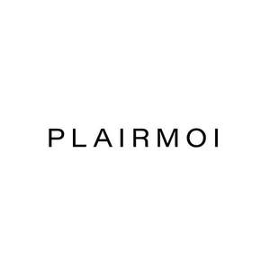

Trade Mark Journal No.2025/009 28 February 2025
UK00004160698 15 February 2025 (3,5)

- Class 3
- Deodorants for pets; Shampoos for pets; Pets (Shampoos for -); Pet shampoos; Pet odor removers; Cosmetic preparations for slimming purposes; Slimming purposes (Cosmetic preparations for -); Cosmetic preparations for use as aids to slimming; Bleaching preparations for cosmetic purposes; Colouring preparations for cosmetic purposes; Hair dye; Dyes for the hair; Hair dyes; Hair colouring and dyes; Hair colorants; Make-up; Makeup; Skin make-up; Make-up remover; Facial makeup; Spot remover; Spot removers [preparations]; Paint remover; Cleaning compositions for spot removal; Stain removers; Non-medicated skin care preparations; Non-medicated body care preparations; Non-medicated face care preparations; Skin care preparations; Non-medicated sun care preparations; Body sprays; Body spray; Body sprays [non-medicated]; Scented body spray; Body lotions; Hairspray; Hair spray; Hair styling spray; Hair sprays; Hair mascara; Laundry detergents; Powder laundry detergents; Laundry balls containing laundry detergent; Liquid laundry detergents; Antiperspirants; Deodorants and antiperspirants; Anti-perspirants; Anti-perspirant deodorants; Antiperspirants [toiletries]; Cosmetic preparations for skin firming; Cosmetic breast firming preparations; Creams (Cosmetic -); Cosmetic creams; Cleansing creams [cosmetic]; Self-tanning preparations [cosmetic]; Cosmetics and cosmetic preparations; Cosmetic creams and lotions; Emollient preparations [cosmetics]; Cosmetic preparations; Hair tonic; Hair tonic [for cosmetic use]; Hair tonics; Hair tonic [non-medicated]; Hair tonics [for cosmetic use]; Perfumes; Fragrances; Oils for perfumes and scents; Perfumery and fragrances; Perfume; Tooth paste; Tooth whitening pastes; Tooth gel; Tooth powder; Tooth polish; Beauty masks; Masks (Beauty -); Facial beauty masks; Beauty masks for hands; Beauty serums; Cosmetics; Skincare cosmetics; Moisturisers [cosmetics]; Hair cosmetics; Skin fresheners [cosmetics]; Shampoos; Hair shampoos; Shampoo; Non-medicated hair shampoos; Emollient shampoos; Lip gloss; Lip gloss palettes; Lip glosses; Lip balm; Lip tints; Beauty serums with anti-ageing properties; Beauty lotions; Beauty creams; Beauty balm creams; Hairstyling serums; Sunscreen.
- Class 5
- Probiotic supplements; Prebiotic supplements; Chlorella dietary supplements; Vitamin supplements; Nutritional supplements; Dietary pet supplements in the form of pet treats; Dietary supplements for pets; Dietary supplements for pets in the nature of a powdered drink mix; Dietary supplements for animals; Mineral dietary supplements for animals; Medicated lotions; Medicated shampoos; Medicated skin lotions; Medicated creams; Medicated hair lotions; Powdered fruit-flavored dietary supplement drink mix; Powdered nutritional supplement drink mix; Powdered nutritional supplement energy drink mix; Dietary supplement drink mixes; Liquid dietary supplements; Hemorrhoidal ointments; Anti-itch ointments; Antihemorrhoidal ointments; Antiseptic ointments; Anti-inflammatory ointments; Appetite stimulant preparations; Sexual stimulant gels; Reducing sexual activity (Preparations for -); Preparations for reducing sexual activity; Preparations for inhibiting sexual coupling; Liquid nutritional supplements; Liquid vitamin supplements; Mineral nutritional supplements; Food supplements in liquid form; Dietary and nutritional supplements; Natural dietary supplements for treating claustrophobia; Medicines for treating intestinal disorders; Pharmaceutical preparations for treating the symptoms of radiation sickness; Pharmaceutical products for the treatment of depression; Pharmaceutical preparations for treating skin disorders; Pharmaceuticals for the treatment of erectile dysfunction; Pharmaceutical for the treatment of erectile dysfunction; Pharmaceuticals and natural remedies; Pharmaceutical preparations for treating sensory organ disorders; Pharmaceutical preparations for treating metabolic disorders; Insect-repellents; Anti-nauseants; Algicides; Vermicides; Anti-dermoinfectives; Dietary supplements; Dietary food supplements; Protein dietary supplements; Nutraceuticals for use as a dietary supplement; Flaxseed dietary supplements; Herbal supplements; Liquid herbal supplements; Homeopathic supplements; Acai powder dietary supplements; Medicated food supplements; Vitamin and mineral supplements for pets; Dietary supplements for medical use; Food supplements; Herbal creams for medical use; Herbal dietary supplements for persons special dietary requirements; Mineral dietary supplements; Dietary supplements with a cosmetic effect; Vitamin supplements for animals; Dietary supplements in powder form; Dietary supplements for infants; Dietary supplements and dietetic preparations containing CBD oil; Herbal sprays for medical use; Constipation (Medicines for alleviating -); Medicated supplements for foodstuffs for animals; Alginate dietary supplements; Glucose dietary supplements; Calcium tablets as a food supplement; Protein supplements; Protein supplements for animals; Feed supplements for veterinary use; Albumin dietary supplements; Zinc dietary supplements; Enzyme dietary supplements; L-carnitine for weight loss; Dietary supplements for controlling cholesterol; Dietary supplements promoting fitness and endurance; Nutritional supplements for veterinary use; Dietary supplements consisting of vitamins; Hair growth stimulants; Medicinal hair growth preparations; Hair growth preparations (Medicinal -); Medicinal preparations for stimulating hair growth; Human growth hormone; Nutritional drink mix for use as a meal replacement; Dietary supplement drinks; Nutritional supplement energy bars; Nutritional supplement meal replacement bars for boosting energy; Food supplements for dietetic use; Yeast dietary supplements; Lecithin dietary supplements; Wheat dietary supplements; Nutritional supplements for livestock feed; Anti-oxidant food supplements; Propolis dietary supplements; Linseed dietary supplements; Pollen dietary supplements; Casein dietary supplements; Whey protein dietary supplements; Dietary supplements and dietetic preparations; Dietary supplements for humans; Medicated toiletry preparations; Medicated toilet preparations; Bath preparations, medicated; Medicated bath preparations; Medicated sunscreen preparations.
PLAIRMOI LIMITED
Representative: DY CNUK Ltd